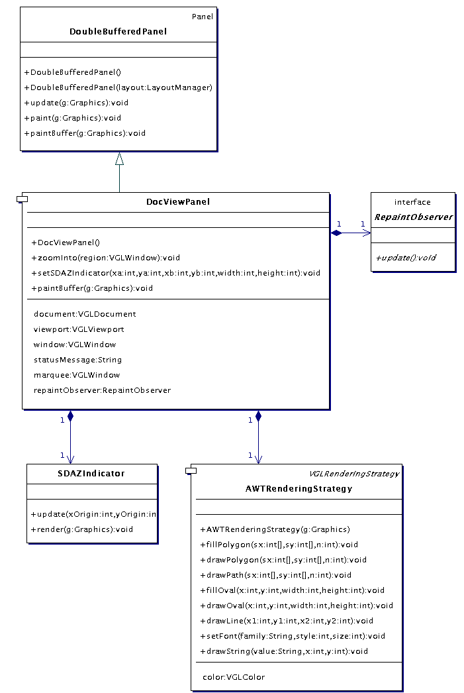
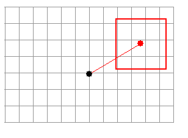

VGLViewer

Implementation
docViewPanel |
Introduction|
Package docViewPanel implements a panel widget which displays a view of a VGLDocument. Originally, the classes in this package were lumped into package vglViewer. They were refactored out into this package when vglViewer became bloated and hard to explain. The refactoring also helped emphasise a layered seperation between the application-level implementation and the widget.
|
Architecture|
DocViewPanel is the main player in this package. It can
|
- render a VGLDocument,
- render a status message,
- render a graphical device indicating the state of speed-dependent automatic zooming,
- render a rectangular "marquee",
- zoom into a region within its VGLDocument, and
- notify an observer whenever it has finished rendering an image of its VGLDocument.
|

Figure 12. docViewPanel classes
| DocViewpanel extends DoubleBufferedPanel, which decorates a java.awt.Panel to implement double-buffered rendering. After configuring a DocViewPanel with a VGLViewport, a VGLWindow and a VGLDocument, a call to a its repaint method will schedule it to render, within the region of itself given by the VGLWindow, the VGLDocument elements that intersect the VGLViewport. Note the paintBuffer TemplateMethod defined by DoubleBufferedPanel and implemented by DocViewPanel. This is called by the paint method defined in DoubleBufferedPanel, and is where the VGLDocument is rendered.
|
|
DocViewPanel renders a VGLDocument using an aggregated a VGLDocumentRenderer. The VGLDocumentRenderer requires an implementation of VGLRenderingStrategy with which to render primitives such as lines and polygons. DocViewPanel supplies to it's VGLDocumentRenderer an AWTRenderingStrategy, which adapts its java.awt.Graphics to the VGLRenderingStrategy interface.
|
|
You can set a status message for DocViewPanel to render with a call to setStatusMessage. The message will be broken into new lines at each newline character in the given message. To stop rendering a message, set it to null.
|
|
You can make DocViewPanel indicate the state of speed-dependent automatic zooming with method setSDAZIndicator. DocViewPanel uses an aggregated SDAZIndicator to render a graphical indicator as shown below. The line represents the direction and rate of scrolling, while the rectangle indicates the region of the document that will be zoomed into when scrolling finishes. You can set the state of the indicator via DocViewPanel's setSDAZIndicator method, which takes the start and finish of the direction vector and the dimensions of the rectangle.
|

Figure 13. SDAZ indicator device rendered by SDAZIndicator
|
The marquee can be set with method setMarquee, after which a red rectangle with the specified dimensions will be rendered in every subsequent frame. To stop rendering a marquee, set it to null.
|
|
To zoom a DocViewPanels view into a region of its VGLDocument, call zoomInto with a VGLWindow defining a region within the current view, in physical Panel coordinates. The VGLDocument will then update map its VGLViewport to the region.
|
|
A RepaintObserver may be registered with a DocViewPanel to be notified whenever the DocViewPanel has just rendered its last frame. This is used for coordinating other events with the DocViewPanels AWT paint thread.
|
|